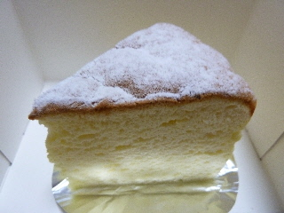
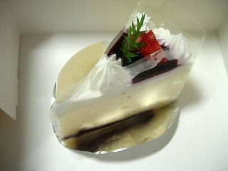
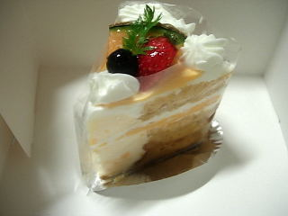

アガートのチーズケーキはふんわり軽いです。
2013/06/25
ちょっと大き目のチーズケーキです。

しっとりしてるんですけど、やわらかくて軽い食感でした。
味も軽くて、爽やかなチーズ味でした。
島根県松江市玉湯町玉造46-2
2013/06/25
ちょっと大き目のチーズケーキです。

しっとりしてるんですけど、やわらかくて軽い食感でした。
味も軽くて、爽やかなチーズ味でした。
2008/8/29
「るるぶ」等、旅行情報誌によく掲載されているお店ですね。
見た目が変わった商品があるので有名ですが、そうじゃないのを選んでみました。

ちょっと固めで、クリーム味が強くて甘いレアチーズでした。レアチーズの部分がとても多かったので、スイーツって感じでした。

甘くて味のしっかりとしたメロンのクリームが効いてるメロンのケーキでした。
菓子パンなんかに入っているようなメロンクリームですが、ふんわりとしたケーキとあってて美味しかったです。メロンクリームってなかなかいいものですね。